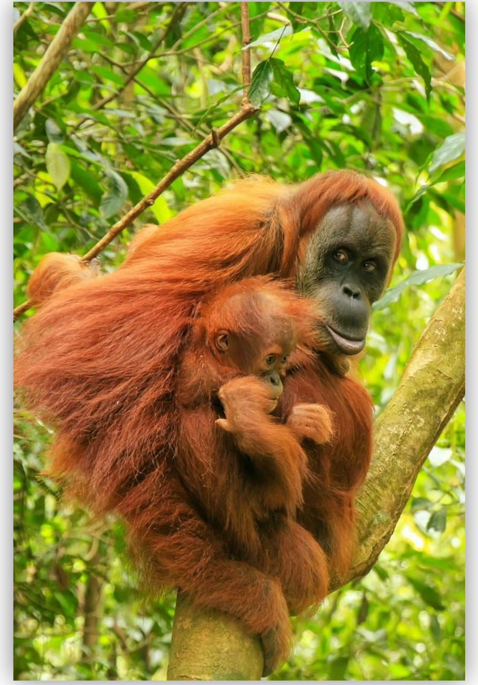
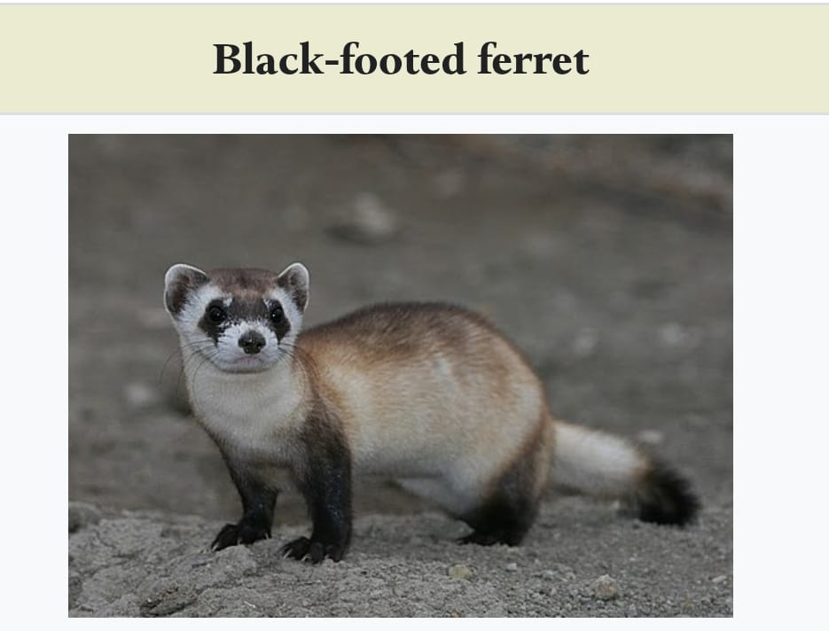

Mammals are warm-blooded animals that have hair or fur on their body, give birth to live young (most species), and feed their babies with milk produced by mammary glands.
Red crested tree Rat
1. Scientific Classification
Kingdom:Animalia
Phylum: Chordata
Class:Mammalia
Order: Rodentia
Family: Echimyidae
Genus: Santamartamys
Species: S. rufodorsalis
2. Physical Appearance
The Red-Crested Tree Rat is a medium-sized rodent known for its
bright reddish-orange crest on its back. It has soft fur,
large round eyes adapted for night activity, and a long tail.
3. Habitat
This species is found only in the Sierra Nevada de Santa Marta, Colombia.
It lives in cloud forests and high-altitude tropical forests,
spending most of its life in trees.
Specialities of the Red-Crested Tree Rat
It is one of the world’s rarest mammals, unseen for over 100 years.
Found only in the Sierra Nevada de Santa Marta, making it highly unique and endemic.
A completely arboreal rodent, which is very uncommon among its family.
SUMATRAN ORANGUTAN
A critically endangered great ape found only on the island of Sumatra.

1. Introduction
The Sumatran orangutan is a critically endangered great ape found only on the island of Sumatra. It is known for its high intelligence, arboreal lifestyle, and reddish-brown fur.
2. Physical Characteristics
Sumatran orangutans are slimmer and lighter than Bornean orangutans. They have long arms, strong hands, and a shaggy reddish coat. Males have distinctive cheek pads (flanges) and long throat sacs.
3. Habitat and Distribution
They primarily live in tropical rainforests of northern Sumatra, especially in the Leuser Ecosystem. They spend most of their lives in trees, rarely coming down to the ground.
Specialities of the Sumatran Orangutan
Highly Intelligent Great Ape: They use tools, solve problems, and show advanced learning skills.
Exclusive to Sumatra: Found naturally only on the island of Sumatra, making them one of the rarest primates.
Critically Endangered Species: With fewer than 13,000 individuals remaining, they are one of the world’s most endangered primates.
Peaceful and Gentle Nature: Known for being calm, solitary, and non-aggressive.
BLACK FOOTED FERRET

Black-Footed Ferret Information
1. Scientific Classification
Kingdom: Animalia
Phylum: Chordata
Class: Mammalia
Order: Carnivora
Family: Mustelidae
Genus: Mustela
Species: Mustela nigripes
2. Physical Characteristics
Body Length: 38–50 cm
Tail Length: 11–15 cm
Weight: 650–1,000 g
Color: Pale yellowish coat, black feet, black-tipped tail, black facial mask
Long, slender body adapted for entering burrows
3. Natural Habitat
Native to the North American Great Plains
Found in shortgrass and mixed-grass prairies
Lives near large prairie dog colonies
Specialities of the Black-Footed Ferret
One of the Rarest Mammals in North America: Once declared extinct in the wild until a small surviving group was rediscovered.
Expert Underground Predator: Specially adapted for hunting inside narrow prairie dog burrows using its slender body and sharp senses.
Highly Specialized Diet: Over 90% of its diet consists of prairie dogs, making it one of the most specialized carnivores.
Only Native Ferret Species in North America: It is the only ferret naturally found on the continent.